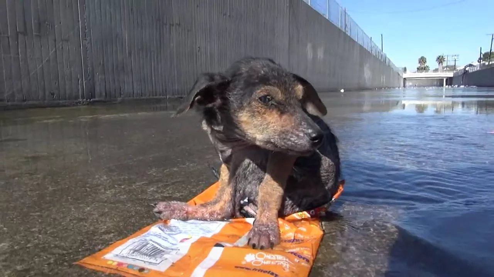

Он родился в трубе под старой котельной. В помёте их было пятеро, все серые, пушистые, с ещё не открытыми глазами. Мать — худая дворняга с умным взглядом — зализывала их и согревала своим боком. Стёпка был последним. Самым маленьким, самым шумным и самым доверчивым. Он не знал, что мир бывает злым. Для него мир пах маминым молоком, старыми кирпичами и солнцем, которое по утрам заглядывало в трубу. Стёпка не понимал слова «брысь». Он думал, это игра. И возвращался снова. И снова получал ботинком по ребрам. Он научился выживать. Но выживать он умел плохо.